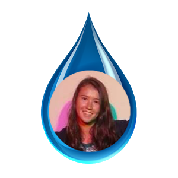
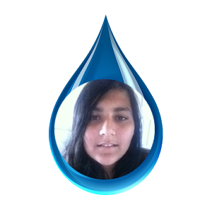

Water You Doing? is a website that uses fun games and trivia in order to teach people the importance of water conservation. Water conservation is a very important topic due to the current drought that California is in. By creating this website, we wish to raise awareness of the current drought we have and how we can all take steps to learn about water conservation and then use those lessons in order to help reduce the amount of water we use.
 Julia is an upcoming senior at Mitty.
Payal is an upcoming junior at Lynbrook.